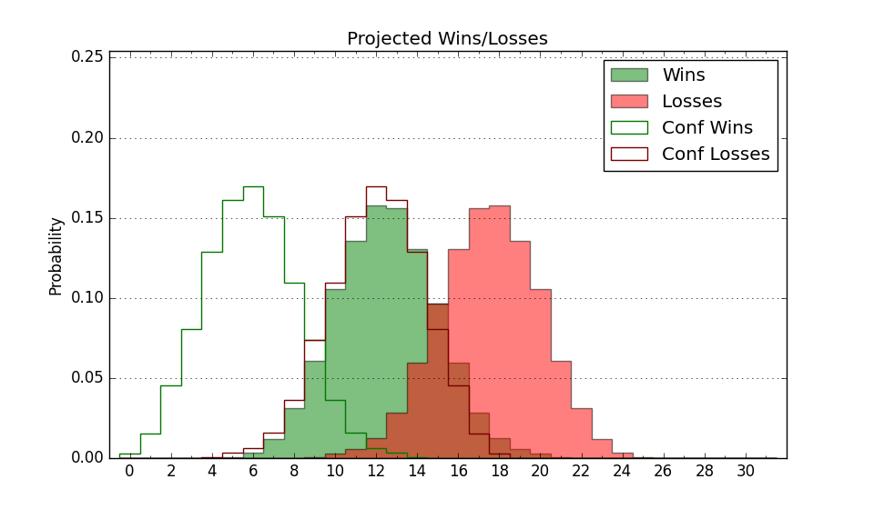

| Home | Game Probabilities | Conferences | Preseason Predictions | Odds Charts | NCAA Tournament |
| City: | Greenville, North Carolina | |
| Conference: | American (1st)
| |
| Record: | 0-0 (Conf) 5-5 (Overall) | |
| Ratings: | Comp.: -3.1 (200th) Net: -4.9 (223rd) Off: 102.7 (192nd) Def: 107.5 (258th) SoR: 0.0 (246th) |
| Remaining | ||||||
|---|---|---|---|---|---|---|
| Date | Opponent | Win Prob | Pred. | |||
| 12/20 | Delaware St. (291) | 81.3% | W 75-64 | |||
| 12/29 | East Tennessee St. (269) | 76.6% | W 73-65 | |||
| 1/2 | @ Florida Atlantic (13) | 3.2% | L 62-86 | |||
| 1/7 | Tulsa (185) | 61.8% | W 72-69 | |||
| 1/10 | @ Temple (145) | 24.5% | L 70-77 | |||
| 1/13 | SMU (66) | 29.0% | L 66-73 | |||
| 1/17 | North Texas (87) | 36.2% | L 62-65 | |||
| 1/20 | @ UAB (196) | 34.0% | L 72-77 | |||
| 1/24 | @ Wichita St. (102) | 17.6% | L 66-77 | |||
| 1/28 | Temple (145) | 52.4% | W 74-73 | |||
| 1/31 | South Florida (137) | 50.2% | W 71-70 | |||
| 2/3 | @ Charlotte (110) | 18.8% | L 60-70 | |||
| 2/10 | @ UTSA (290) | 55.9% | W 78-76 | |||
| 2/15 | Wichita St. (102) | 42.2% | L 71-73 | |||
| 2/18 | Tulane (99) | 40.6% | L 80-83 | |||
| 2/24 | @ Rice (176) | 30.9% | L 69-74 | |||
| 2/29 | Memphis (31) | 19.0% | L 70-81 | |||
| 3/3 | @ North Texas (87) | 14.3% | L 58-69 | |||
| 3/6 | @ SMU (66) | 10.7% | L 62-77 | |||
| 3/9 | Charlotte (110) | 44.1% | L 64-66 | |||
| Previous | Game Score | |||||
| Date | Opponent | Win Prob | Result | Off | Def | Net |
| 11/11 | Campbell (287) | 80.7% | W 77-63 | 6.9 | 0.2 | 7.1 |
| 11/15 | USC Upstate (300) | 82.6% | L 81-83 | 10.2 | -22.5 | -12.3 |
| 11/19 | Northeastern (178) | 60.8% | L 76-82 | 2.5 | -17.5 | -15.0 |
| 11/20 | Georgia Southern (338) | 88.3% | W 82-64 | 8.9 | 4.7 | 13.7 |
| 11/21 | Kennesaw St. (207) | 65.6% | W 85-84 | -0.3 | -4.4 | -4.6 |
| 11/25 | @George Mason (94) | 15.6% | L 59-81 | -2.9 | -22.0 | -25.0 |
| 11/30 | UNC Wilmington (125) | 47.5% | W 74-66 | 12.3 | 4.5 | 16.8 |
| 12/4 | Md Eastern Shore (335) | 88.1% | W 63-52 | -16.9 | 11.6 | -5.3 |
| 12/9 | South Carolina (74) | 30.7% | L 62-68 | -7.2 | 3.4 | -3.7 |
| 12/14 | (N) Florida (45) | 13.3% | L 65-70 | -7.1 | 17.9 | 10.8 |
| Stats & Trends | |||||
|---|---|---|---|---|---|
| Current | Day | Week | Month | Season | |
| Composite | -3.1 | -0.4 | +1.3 | -3.9 | -4.7 |
| Comp Rank | 200 | -2 | +21 | -43 | -60 |
| Net Efficiency | -4.9 | -0.5 | +2.3 | +1.6 | -- |
| Net Rank | 223 | -5 | +20 | +4 | -- |
| Off Efficiency | 102.7 | -0.7 | -1.2 | -18.0 | -- |
| Off Rank | 192 | -17 | -39 | -163 | -- |
| Def Efficiency | 107.5 | +0.3 | +3.4 | +19.6 | -- |
| Def Rank | 258 | +5 | +55 | +88 | -- |
| SoS Rank | 330 | -9 | +18 | -1 | -- |
| Exp. Wins | 12.5 | -0.3 | +0.1 | -2.7 | -3.9 |
| Exp. Conf Wins | 5.9 | -0.3 | +0.1 | -1.7 | -2.2 |
| Conf Champ Prob | 0.0 | -0.0 | -0.0 | -1.1 | -2.1 |

| Advanced Stats | ||
|---|---|---|
| Stat | Value | Rank |
| Off Eff FG % | 0.481 | 228 |
| Off Ast Ratio | 0.129 | 237 |
| Off ORB% | 0.308 | 85 |
| Off TO Rate | 0.130 | 61 |
| Off FT Ratio | 0.392 | 58 |
| Def Eff FG % | 0.528 | 265 |
| Def Ast Ratio | 0.153 | 263 |
| Def ORB% | 0.268 | 151 |
| Def TO Rate | 0.162 | 105 |
| Def FT Ratio | 0.361 | 239 |